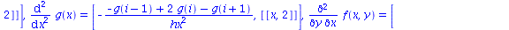
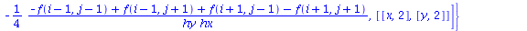
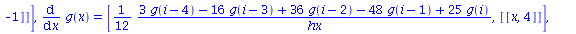
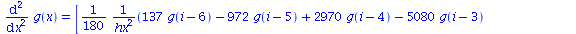

| > | read("FD.mpl"):MFD(): |
| Warning, grid_functions is not assigned |
| FD table updated, see the content using SFDT() command |
| > | grid_functions:={f,g}: |
| > | A:=diff(y*f(x,y)*diff(sin(x*y)*g(x),x),x,y); |
| > | B:=Gen_Sten(A): |
| > | lprint(B); |
| (1/2)*(-f(i-1, j)+f(i+1, j))*(cos(x(i)*y(j))*y(j)*g(i)-(1/2)*sin(x(i)*y(j))*(g(i-1)-g(i+1))/hx)/hx-(1/4)*y(j)*(-f(i-1, j-1)+f(i-1, j+1)+f(i+1, j-1)-f(i+1, j+1))*(cos(x(i)*y(j))*y(j)*g(i)-(1/2)*sin(x(i)*y(j))*(g(i-1)-g(i+1))/hx)/(hy*hx)+(1/2)*y(j)*(-f(i-1, j)+f(i+1, j))*(-sin(x(i)*y(j))*x(i)*y(j)*g(i)+cos(x(i)*y(j))*g(i)-(1/2)*cos(x(i)*y(j))*x(i)*(g(i-1)-g(i+1))/hx)/hx+f(i, j)*(-sin(x(i)*y(j))*y(j)^2*g(i)-cos(x(i)*y(j))*y(j)*(g(i-1)-g(i+1))/hx-sin(x(i)*y(j))*(-g(i-1)+2*g(i)-g(i+1))/hx^2)+(1/2)*y(j)*(-f(i, j-1)+f(i, j+1))*(-sin(x(i)*y(j))*y(j)^2*g(i)-cos(x(i)*y(j))*y(j)*(g(i-1)-g(i+1))/hx-sin(x(i)*y(j))*(-g(i-1)+2*g(i)-g(i+1))/hx^2)/hy+y(j)*f(i, j)*(-cos(x(i)*y(j))*x(i)*y(j)^2*g(i)-2*sin(x(i)*y(j))*y(j)*g(i)+sin(x(i)*y(j))*x(i)*y(j)*(g(i-1)-g(i+1))/hx-cos(x(i)*y(j))*(g(i-1)-g(i+1))/hx-cos(x(i)*y(j))*x(i)*(-g(i-1)+2*g(i)-g(i+1))/hx^2) |
| > | E:=DtoC(B): |
| > | E:=convert(series(E,hx,4),polynom): |
| > | E:=convert(series(E,hy,4),polynom): |
| > | residual:=simplify(eval(A-E,{hx=0,hy=0})); |
| > | Show_FD(); |
  |
Changing the FDA scheme to backward in x and forward in y and requesting 4'th order accuracy:
| > | FDS:=table([t=[-1,-1],x=[-1,0],y=[0,-1],z=[-1,-1]]): |
| > | Update_FD_Table(4,FDS): |
| FD table updated, see the content using SFDT() command |
| > | GS(A): |
Now in the FD_results table you can see that all the derivatives are computed using these schemes, and order of accuracy is 4 or higher. Note that -1 means FD expression is exact in that coordinate, i. e. the expression does not contain derivatives with respect to that coordinate.
| > | Show_FD(); |
  |
| > |